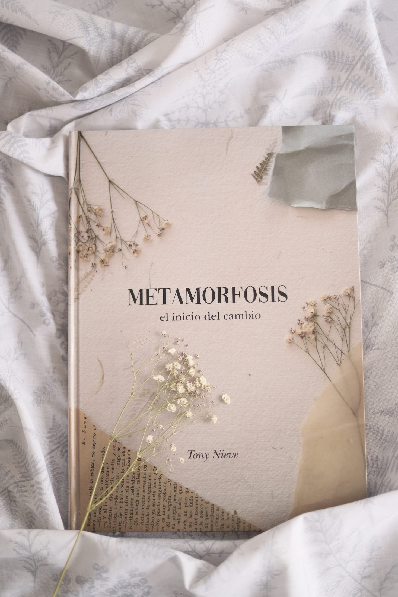
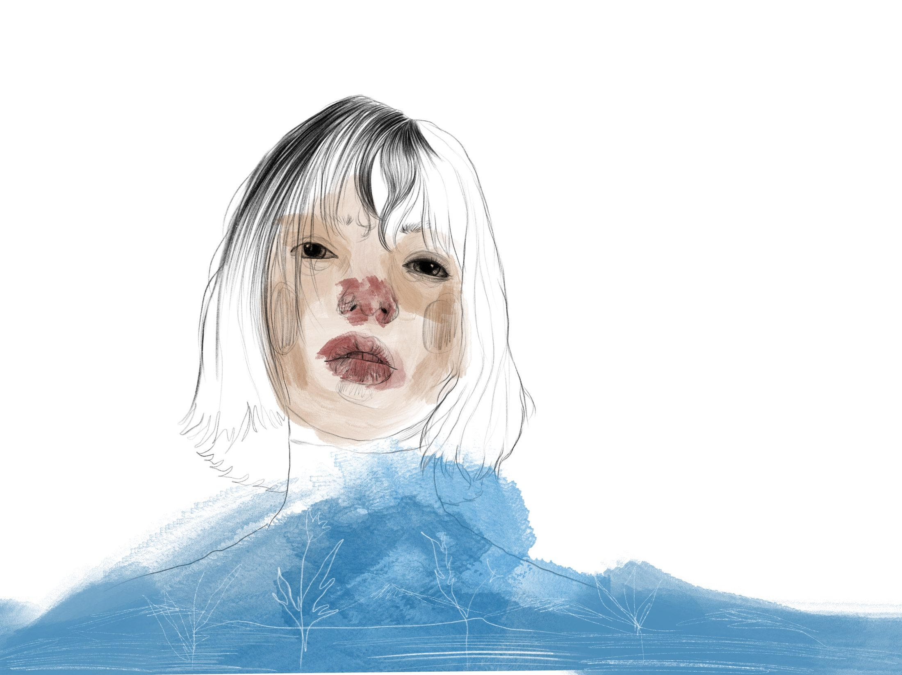
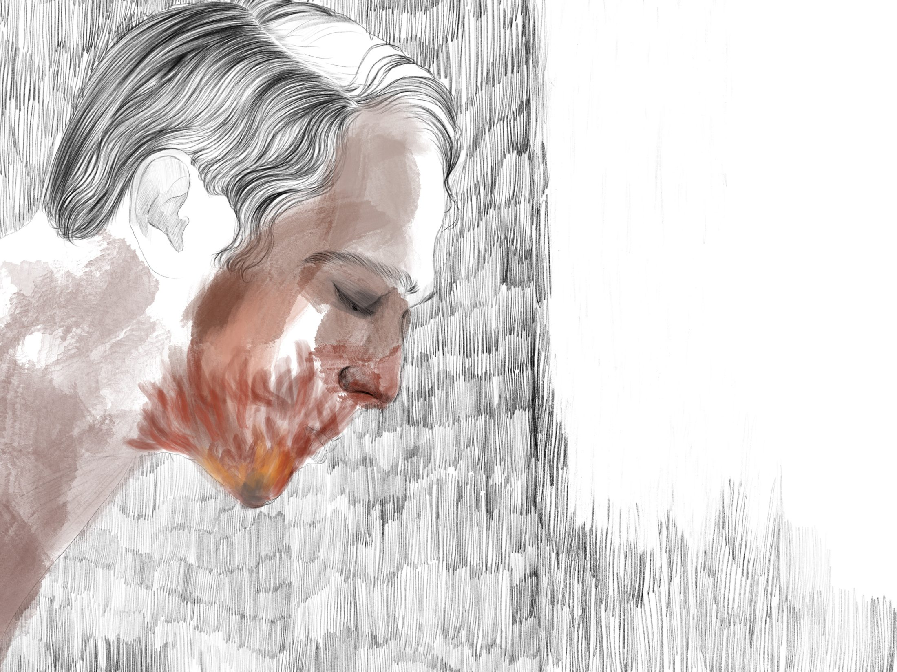
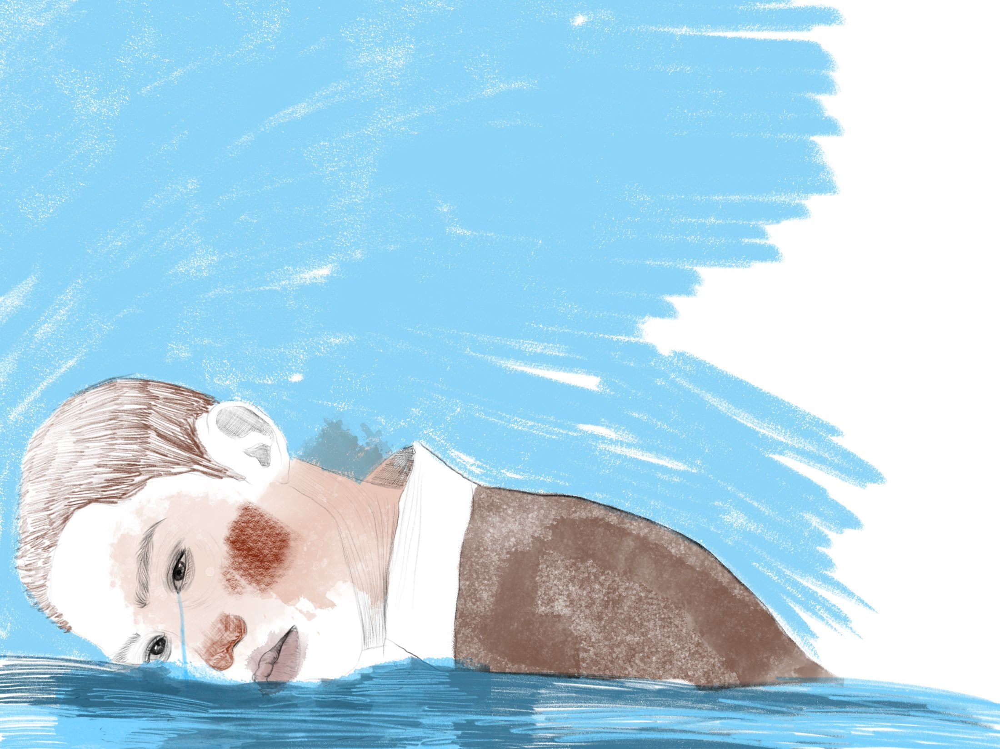
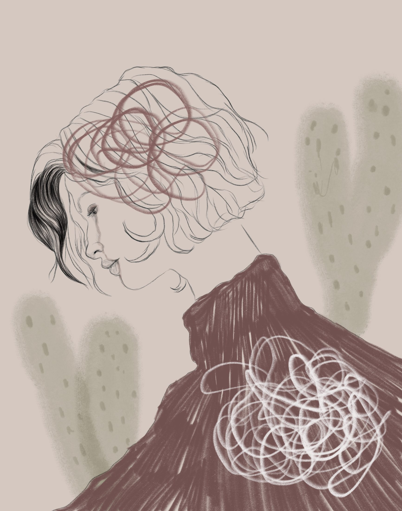
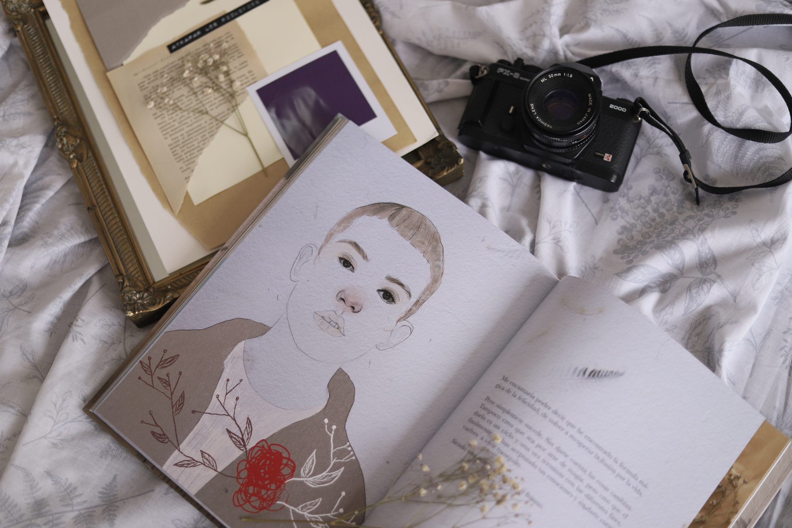
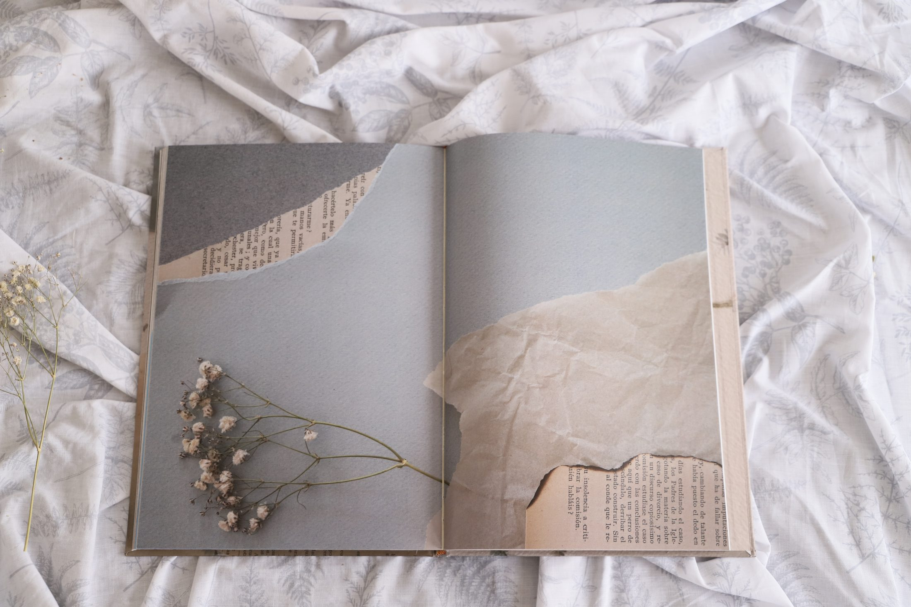
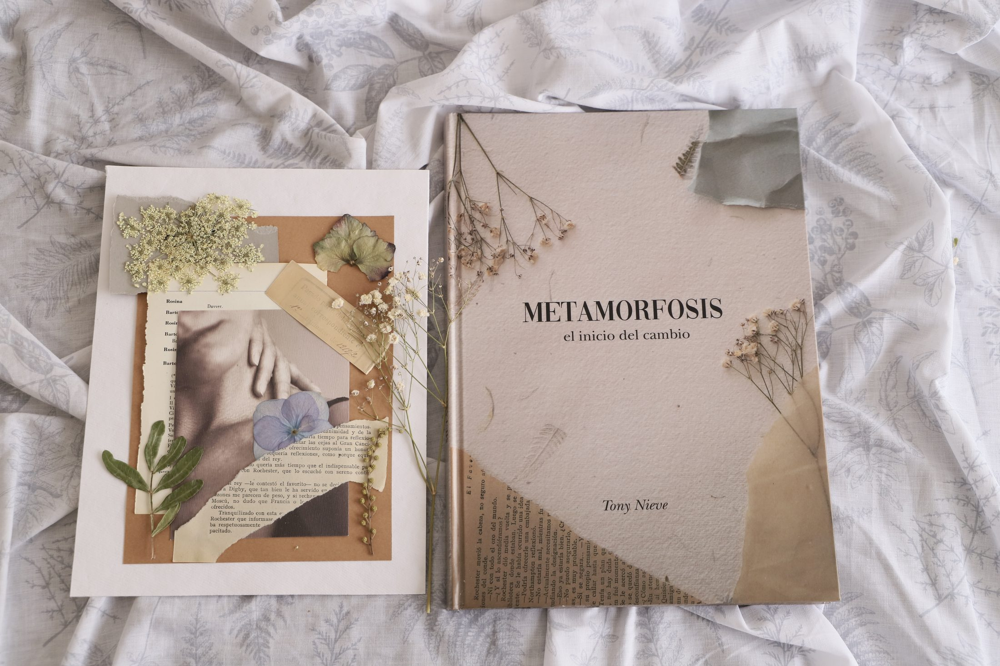
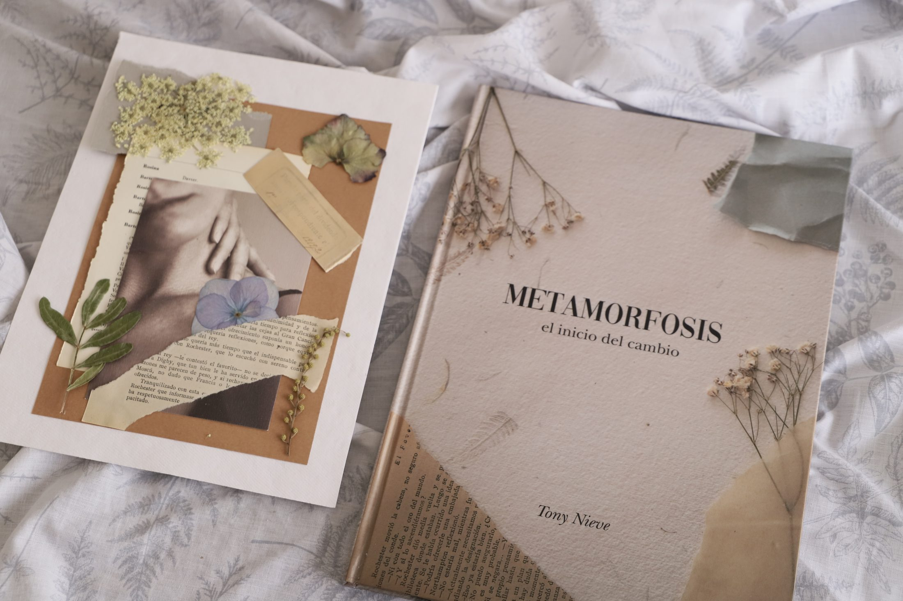

Metamorfosis
Concepto
Mi Proyecto Final de Carrera, un libro sobre los finales y sobre cerrar una etapa para poder empezar otra. Lo escribí, lo ilustré, lo diseñé y lo maqueté de principio a fin.

Pieza
Libro impreso, con texto e ilustración originales.









El proyecto
La historia sigue las fases del duelo. Cada capítulo es un estado emocional distinto, del enfado a la aceptación, y el texto y la ilustración avanzan juntos para que el cambio se vea, además de leerse. Al final aparece la mariposa, y cerrar una etapa deja de ser solo una pérdida para convertirse en el principio de un cambio.
Siguiente proyecto